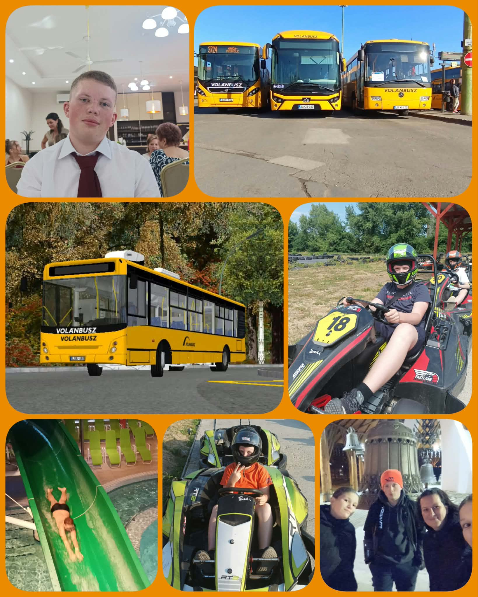

Sajóecsegen lakok,15 éves vagyok,van 2 tesóm , nagyon szeretk otthon gépen dolgozni (pc) azonbelül Blender,Omsi...stb játszok de ezen kívül szeretem a buszokat (ikarus ARC E127/E134)
A kandót azért választotam : mert az informatika érdekelt mindig , és ezért gondoltam hogy ide jövök és tanulhasak többet az informatika világjárol.
